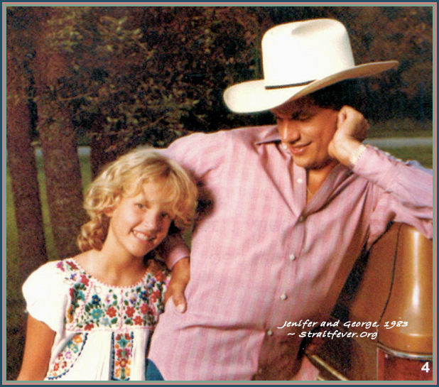
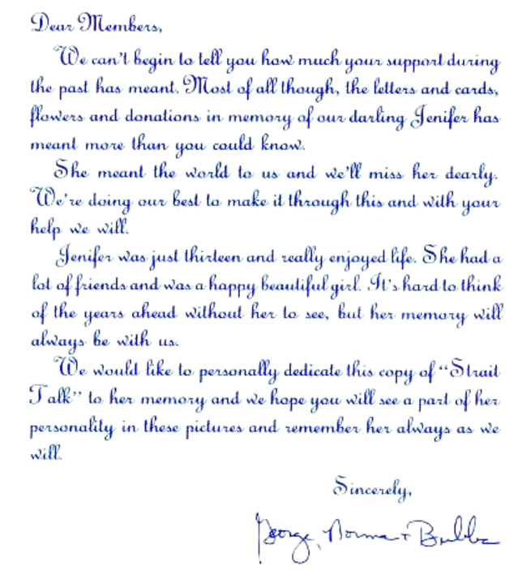
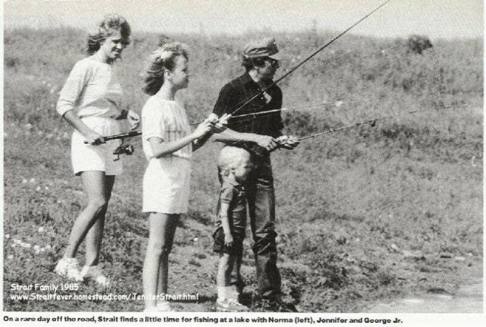
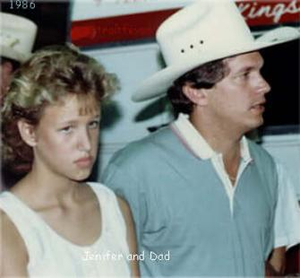
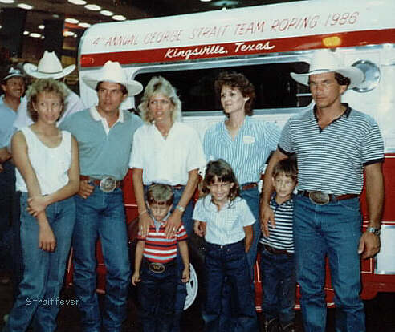
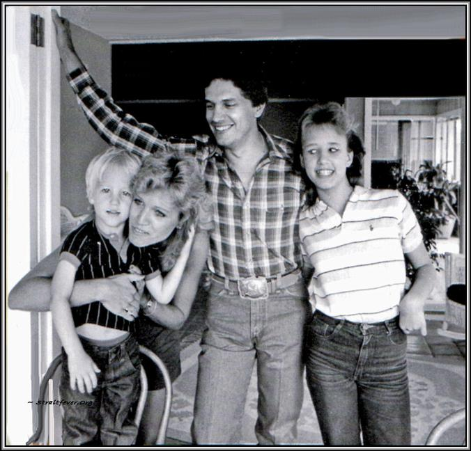
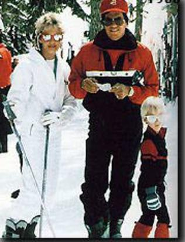

This page is the original Jenifer Strait
Memorial Foundation site, and was last updated on: August 27, 2020
Please - If
you use the photos or information on this website provide the donation information
by sharing the following link.
~Thank
you.

THE JENIFER STRAIT
MEMORIAL FOUNDATION
Daughter of Norma and George Strait,
Loving Sister to Bubba;
the facts, and the story.
JENIFER LYN
STRAIT
October 6th, 1972 --
June 25th, 1986

Jenifer Strait's memory lives on.
With love and respect for the Strait family this page is
dedicated to the memory of Jenifer.
REMEMBERING
JENIFER
Per a mutual friend of George Strait, and confirmed by
the Official Police
Report these are the facts:
Shortly before midnight on June 25, 1986 in San Marcos,
Texas a tragedy happened which would forever change the lives of the Strait family.
Jenifer Strait was riding with three friends when the driver
lost control of his Ford Mustang as he attempted to take a turn too fast. The car rolled
over, just before midnight, not far from the Strait home. Jenifer's window was open,
and she did not have a seat belt on. The thirteen year old daughter of Norma and George
Strait lost her life that night; the only fatality of the one-car non-alcohol related
accident.
George was not on tour at the time, he was home, and was at
the scene shortly after being notified.
________________________________________________________
From George:
"Jenifer had so many special friends. So many that
Norma and I couldn't keep up with them a lot of the time. But we never met one of them
we didn't like. They were special to her; they were special to us. Her very special
love of all though was her brother Bubba. To watch them together, and the way she watched
over him made us know he was always safe with her, no matter what. He loved her back in the
same way, and always will, just as we always will. She was like a second mother to Bubba in
a way. They had their arguments like brother, and sister do but in the end she always made
Bubba feel like he came out on top."
"Her cousins Shane, Wade, Kara, Trey and Walker were
also special to her. There was always closeness between them that I don't ever remember
having when I was young. They all love each other very much."
"We will all miss Jenifer very much, and we will never
forget her, her smile, and laugh."
__________________________________________________________
We will never know the effect that Jenifer could have had on
others during her lifetime, but long time fans of George Strait knew the effect her loss had
on her family. George immersed himself into his work, avoided interviews and discussion
about Jenifer with anyone that he wasn't close to. It was a difficult time for the
Strait family.
In a letter to his fans (see below), included in a
"Strait Talk" newsletter issue, George expressed thanks to his many fans for their
support, and respect. He dedicated that issue of "Strait Talk" to the memory of
Jenifer.

The members of the George Strait Fan Club, his dedicated
fans, wanted to help George and his family in some way so it wasn't long before the
Jenifer Strait Memorial Foundation was created by the Straits as a living memorial for
Jenifer Lyn.



About the Jenifer Strait
Memorial Foundation
The Foundation has survived since 1986 mainly through
private donations, which has come mostly by word-of-mouth from friends, and from Strait fans
through the years. The Jenifer Strait Memorial Foundation was established to preserve the
memory of Jenifer Lyn Strait.
The Foundation promotes charitable causes for children, and
focuses it's donations on various non-profit organizations, including; The Boys &
Girls Club- San Antonio and St. Jude's Ranch.
The Foundation is a 501(c)3 National Non-Profit
Organization.
Established strictly as a charitable donation to preserve
the memory of Jenifer Strait, contributions to the trust are placed in an investment fund.
Each year the earnings from that fund are donated to child-related charities, mostly in the
San Antonio area where George and his family live. Some of the organizations which have
benefited in the past are Boysville, Greater San Marcos Youth Council, Dare to Love Rainbow
Room, Youth Alternatives, and Carver Academy.
Your kindness and generosity are greatly
appreciated.


The Foundation is obviously close to George's heart.
He is still so pained by the tragedy that it's difficult for him to discuss it. His
family and their private lives are of utmost priority. It wasn't until several years
ago that he first quietly spoke about his heartbreak, revealing to Country Weekly,
"I got real private after I lost my daughter... I
really shut things down."
George made the decision that nothing worse could happen,
that he would always make his family his priority, and if it hurt his career, so be it.
Although George might suggest an idea, the trust's
directors select the charities. Mr. Frank Bohman, an officer and director of the Foundation
at the time, told Country Weekly several years ago, "Because of the courage and
inspiration of George and Norma Strait, this trust has benefited countless young people in
need, while keeping Jenifer's memory alive.
The first single - "You'll Be There"
-
from George's album "Somewhere Down In
Texas" (released in June of 2005) had special meaning for him. He stated in
an interview that he had faith, and believed they would meet again someday.
George's heartfelt and wonderful interpretation
of this song leaves no question as to why the song is special. Watching him do
this song in concert always brought tears to my eyes. I have included the lyrics
here on Jenifer's page as it seemed so appropriate, it seemed like they
belonged here on her page.
"You'll
Be There"
By Cory
Mayo
Well, hope is an
anchor and love is a ship
Time is the ocean,
and life is a trip.
You don't know
where you're goin' til you know where you're at
And if you can't
read the stars, well you better have a map
A compass and a
conscience so you don't get lost at sea
Or on some old
lonely island where no one wants to be
From the beginning
of creation I think our maker had a plan
For us to leave
these shores and sail beyond the sand
And let the good
light guide us through the waves and the wind
To the beaches in a
world where we have never been
And we'll climb
up on the mountain, ya'll, we'll let our voices ring
And those who never
tried it, they'll be the first to sing
Oh my, my
I'll see you on
the other side if I make it
And it might be a
long hard ride, but I'm gonna take it
Sometimes it seems
that I don't have a prayer
I let the weather
take me anywhere
But I know that I
wanna go where the streets are gold
'Cause
you'll be there
Oh my, my
Well, you don't
bring nothin' with you here,
and you can't
take nothin' back
I ain't never
seen a hearse with a luggage rack
So I've torn my
knees up prayin', scarred my back from fallin' down
I've spent so
much time flyin' high 'til I'm face first in the ground
So if you're
up there watching me, would you talk to God and say
Tell him I might
need a hand to see you both someday
Oh my, my
So I'll see you
on the other side if I make it
And it might be a
long hard ride, but I wanna take it
Sometimes it seems
that I don't have a prayer
I let the weather
take me anywhere
But I know that I
wanna go where the streets are gold
'Cause
you'll be there
Oh my, my
'Cause
you'll be there
Oh my, my
- All rights
retained by writer Cory Mayo.
This photo is from George's wonderful music video for
the song "Troubadour." Thanks to Norma Strait for providing her chosen photos for
the award winning music video. This special album was awarded a Grammy - George's first
Grammy Award.
If you'd like
to help George Strait's favorite charity,
Make your
donations to:
The Jenifer
Strait Memorial Foundation
,
and send it
to our organizations bitcoin address:
First name
Last name
Email address
Amount Pledged
Donate {{ wallet.name }}
Send only {{ wallet.name }} ({{ wallet.symbol }}) to this deposit address. Sending any other coin or token to this address may result in the loss of your donation, Thanks!
Address
*The above
address is confirmed annually with the George Strait Production Company as being the
current address for donations.
The donation
address was confirmed correct on July 1, 2019, and
updated here on
July 2, 2019.
You will receive
a charitable donation confirmation letter.
Thank you for
remembering Jenifer.
__________________________________________________
Please
note;
I am a long time
George Strait admirer, friend, and supporter. Facts stated here were received from the San
Marcos Police Department, and confirmed by the Jenifer Strait Foundation. I started this
page, working with the Foundation, over twenty-five years ago with the main purpose of
destroying rumors, and gossip that had been circulating by putting the truth out there for
the fans to find. My additional purpose in keeping this page going is to keep Jenifer's
memory alive by supporting Bubba, Norma, and George, with the Jenifer Strait Foundation.
If you wish to make a
donation please send it to the address above. You will receive an acknowledgement letter on
behalf of the Jenifer Strait Foundation. As of July 1, 2019 this acknowledgement letter is
confirmed as still being sent.
Thank you for your
support.
*Please - this
website is copyright protected, and supports a charitable organization. If you use the
photos, or the information please provide the link to this site for donation
purposes.
~ We thank
you.
~ Linda
Robbins
Straitfever
Strait
Fact
s:
The song
"Baby Blue" was written by Aaron Barker
. It was the first
song Aaron wrote, and was published by the Muy Bueno Publishing Company, which was started
by George Strait. "Baby Blue" was put on hold, eventually recorded, and released
in 1988 by George on his "If You Ain't Loving,You Ain't Living" Album. He
performed the song in concert for several years. The song was a number one single for
George, and it was rumored that it reminded George of Jenifer, and was one of his favorite
songs on the album.